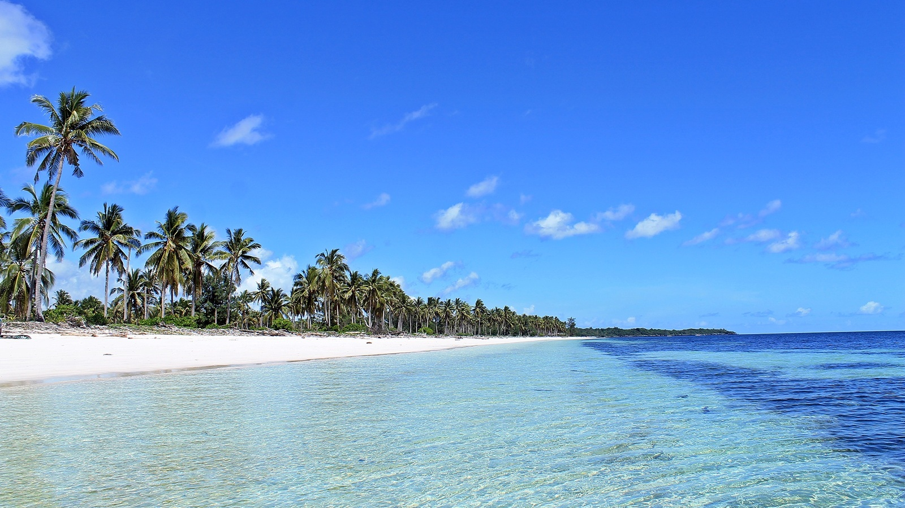

HOME

WHY WE MUST
TRAVELLING?
What is
the Advantage
of Traveling?
1. The world is a book and those who do not travel read only one page
2. Better to see something once than to hear about it a thousand time
3. My favorite thing to do is to go where i’ve never been
4. Just Go.